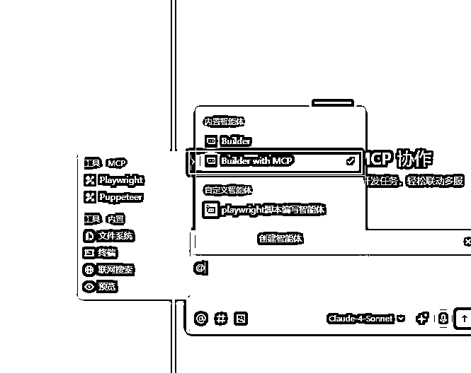
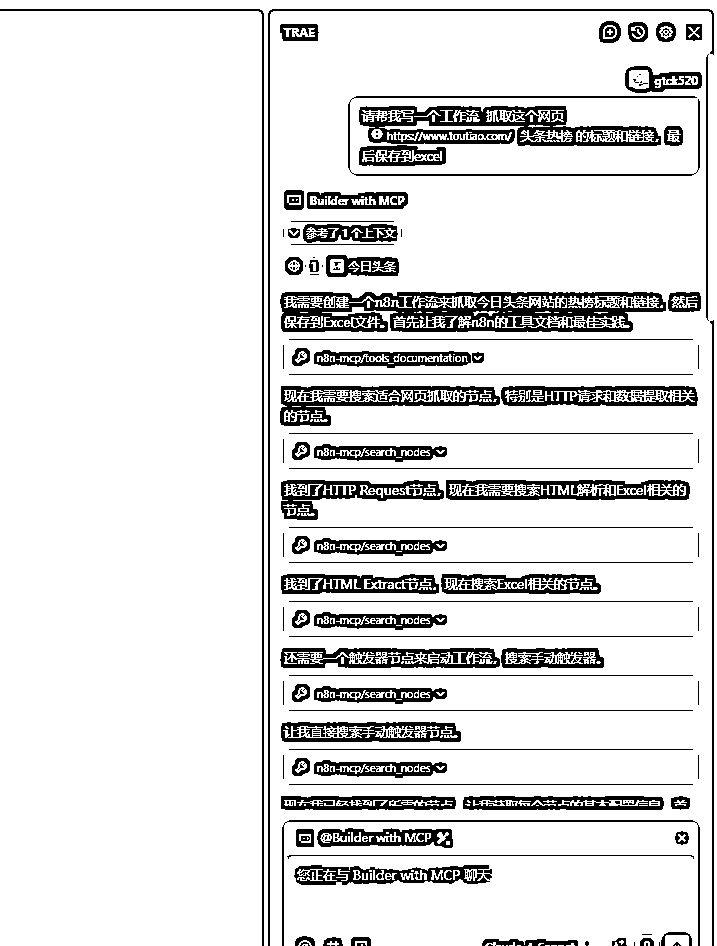
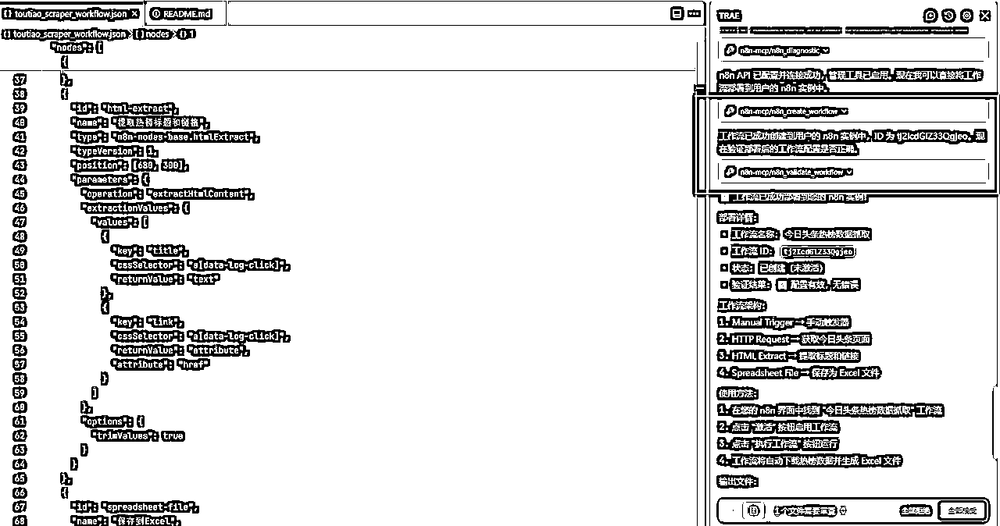

来源：https://b121w2zgwyx.feishu.cn/docx/JoV9dJIp2om2gbxDQmsc4Sidnhe
这两天在研究n8n,我发现，n8n的数据，包括工作流的配置，全部都是json格式的，这意味什么？意味着这对AI天然友好，只要给足够多的n8n节点以及数据的传输规则。以如今AI编程的强大，应该是可以直接帮我们完成工作流的搭建！但是n8n节点那么多，去收集和整理还是挺费事的。
可是！没想到，就在我搜工作流学习的时候，竟然发现！已经有先驱者，为我们实现这个远大的理想，哈哈
它将n8n的使用文档，以及500多个节点信息，全部做成了mcp工具集，并通过规则适配。可以让AI接收到任务后，通过工具去了解文档和节点的使用，然后通过编程的方式直接编写工作流的json文件。最后通过n8n的api自动帮我们部署到n8n上。全程不需要我们动手，你连n8n都不需要打开。
废话不多说，今天我手把手的教大家如何使用这个Mcp工具
理论上，既然是mcp工具，在任何支持mcp的地方应该是都可以使用的，但是我个人觉得还是在AI编程工具中使用效果会更好。这里我使用TRAE作测试，其他工具大差不差的。
首先，我们打开TRAE，找到这个Builder
我们切换到MCP模式

接着，我们找到工具配置这里，然后点击添加更多工具
找到添加，我们选择手动添加。
打开n8n-mcp的github地址 ：https://github.com/czlonkowski/n8n-mcp
找到如下的安装代码：
这里有两个需要我们修改的地方，一个就是我们n8n的云端地址，另外一个是apikey；云端地址就是我们自己部署的n8n地址，看吧，我昨天刚说了服务器部署n8n的好处，如果有想服务器部署的，可以看我上一篇内容：
对了，也可以不要配置这两个，但这样子的话，最后就需要自己去导入工作流了。
接下来，我们需要获取apikey，进入我们的n8n,在左下角找到这个设置。
进入之后，找到这个n8n API，然后点击创建api key
名称什么的随便填一下，点击创建，然后将这个秘钥复制，替换前面那个配置的apikey的地方。
回到我们的编程工具中，把我们替换好配置的完整配置黏贴进来，点击确认，就会开始安装mcp
等待一段时间后，看到这个n8n-mcp变成打勾的状态，就说明安装成功了。
现在一般的编程工具都有像这样的规则提示词的配置的地方，我们找到“规则”，然后点击创建项目规则。
接着还是打开那个github项目，找到 Claude Project Setup，这个就是项目规则的提示词，我们直接复制这个提示词
回到我们刚才新建的规则文件中，黏贴进来，记得保存一下。
我测试的任务相对比较简单，就是让它开发个工作流，爬取头条热榜数据，最后保存到excel中
你看，AI会自动调用工具，了解n8n的使用，以及各个节点的功能，找到适合的节点进行工作流创建

过程非常顺利哈，就是第一遍它没有自动帮我把工作流创建到我的n8n.然后用提示词强调了一下，接着它就调用工具把工作流部署到我的n8n了，看到这里生成了工作流ID说明成功了。

我们来到我们的n8n中，果然看到了新建的工作流
我们点进来查看一下，发现工作流很完整，不过我试运行失败了。因为我抓的网址是动态加载数据的，这个爬取还是有一定难度的，要使用模拟浏览器什么的。所以这里最终执行完是个空数据。
于是，我找了个简单的网站，让它把网站换一下。它可以直接借助工具，在我们原有的工作流上做修改。是的，全程都不需要我介入！
然后，我们再次打开我们工作流，发现它不仅修改了功能，连名称都给我调整了，我只能说：666.
我点击执行工作流。
运行成功！ 哈哈哈哈，邪修练成！
不过我发现它爬取的数据有瑕疵，多个标题跟多个链接黏在一起，被当做了一条了。这个我感觉挺正常了，要让AI这么精细还是有点难，但这个通过加强提示词指示,基本不是问题了。
重要的是整个流程基本是没什么大问题的。不过，我只测试了一两遍，不够说明哈，各位道友，有兴趣的，可以试试咯